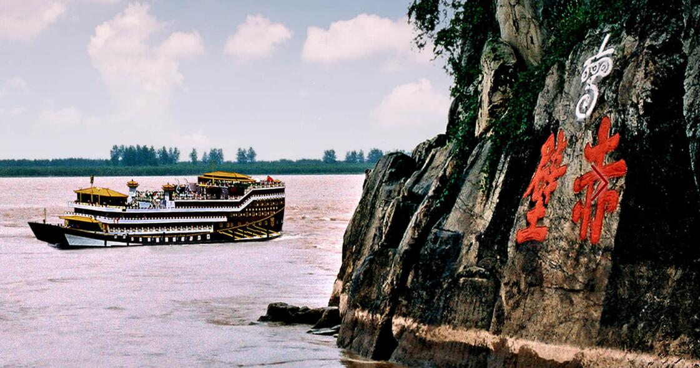
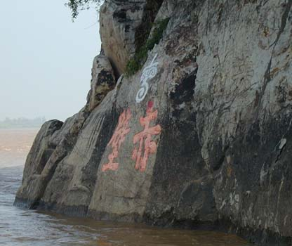
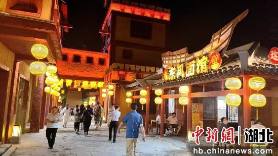
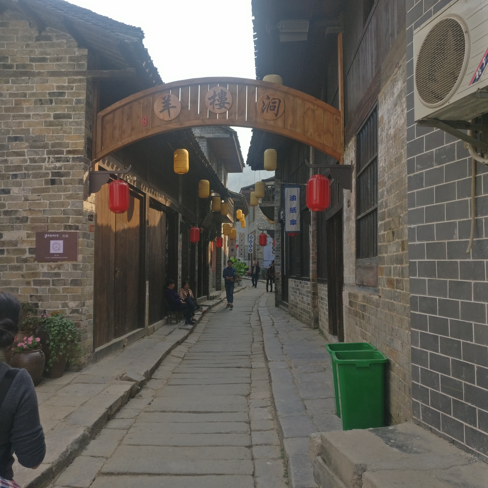
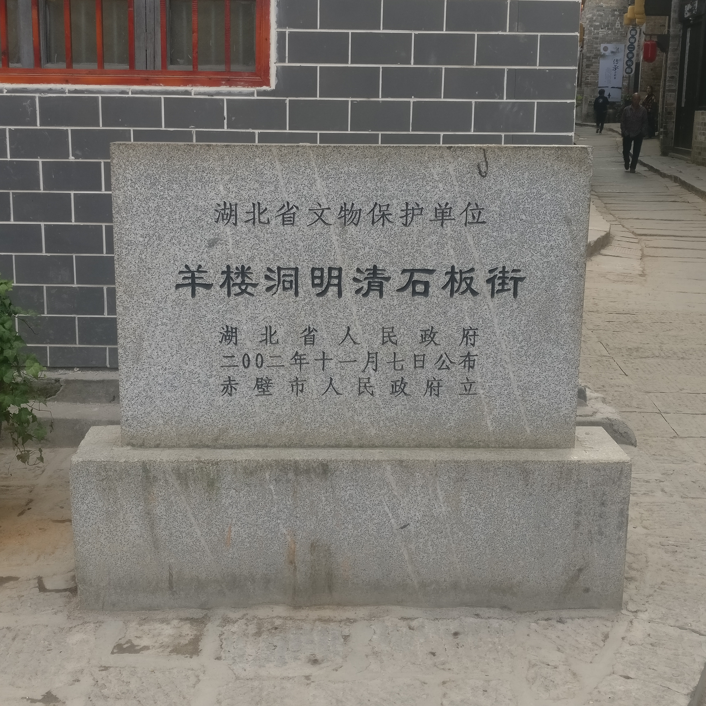
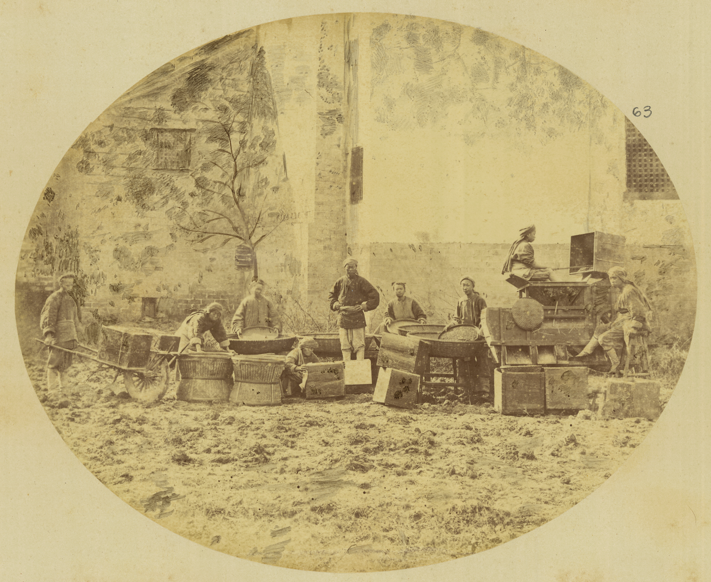
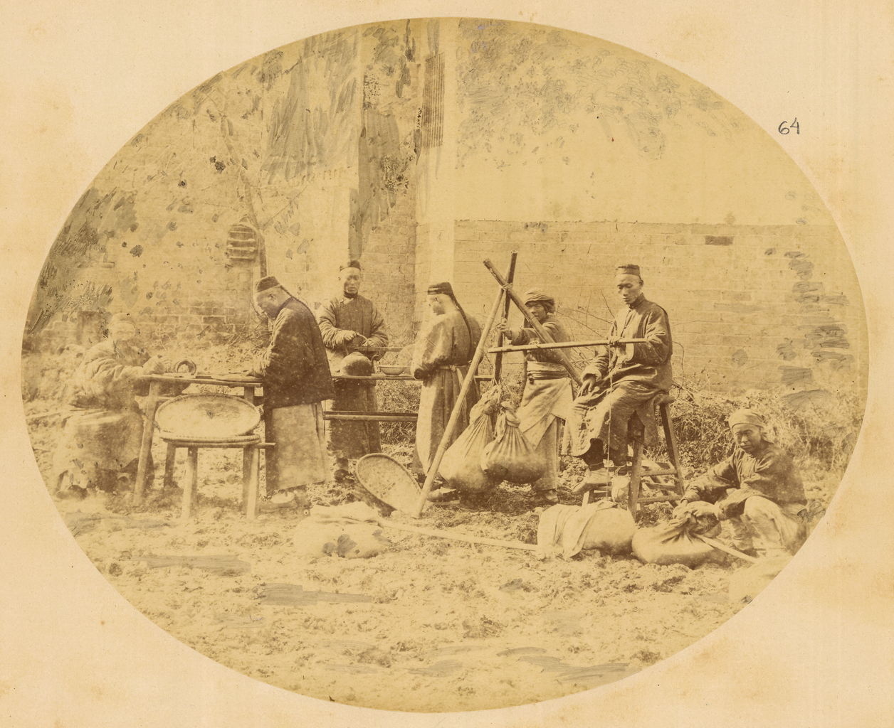
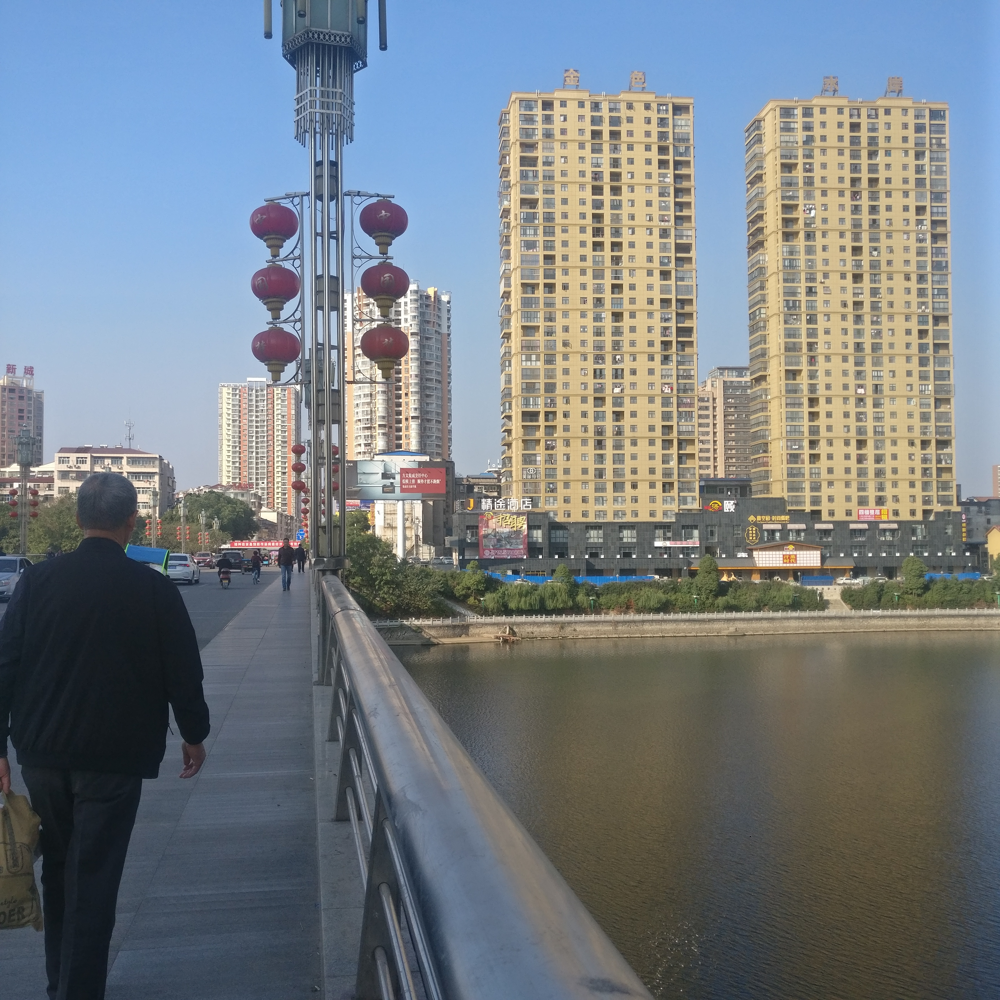
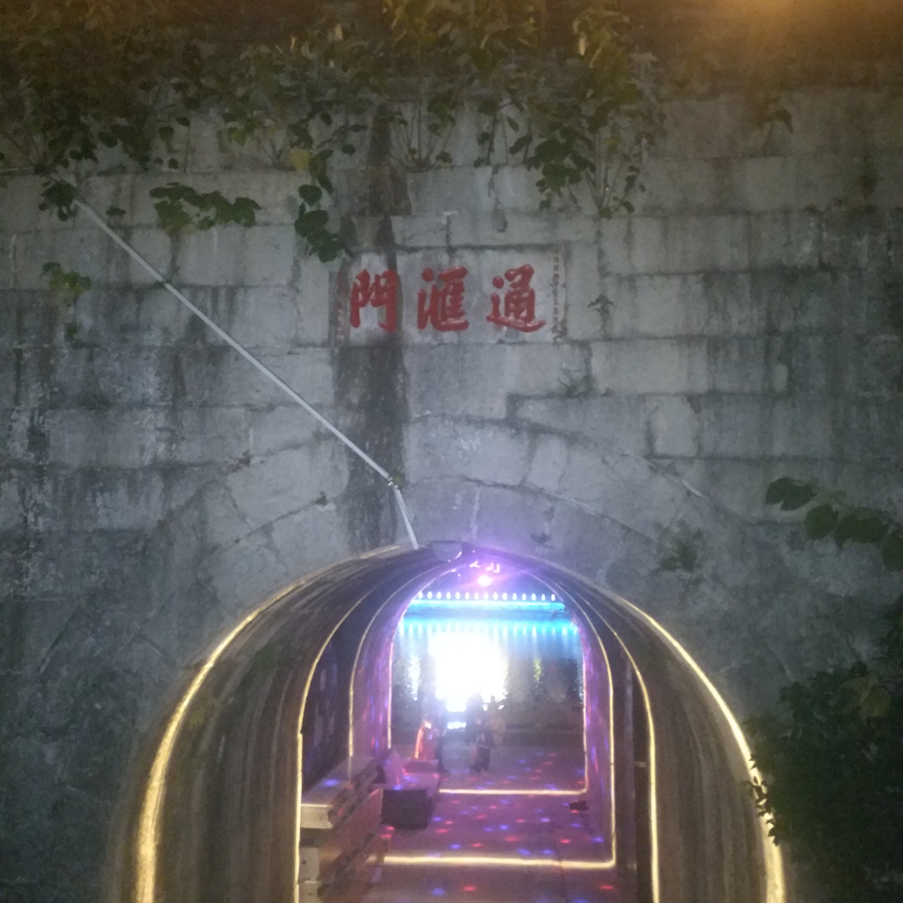

走进赤壁 · 三国古战场
先给辨识度，再给可玩的夜。主视觉用摩崖和楼船，转化用演艺、烟花、东风街。




畅游赤壁 · 照片挑选
按站点叙事挑，不按网上最火的图堆。只收能核对是湖北赤壁市的实拍：三国古战场、羊楼洞、陆水湖与城区。黄州东坡赤壁一律不收。
先给辨识度，再给可玩的夜。主视觉用摩崖和楼船，转化用演艺、烟花、东风街。



古镇负责把记忆做成东西。现拍证明「还能走上去」，1874 年照片证明「这茶走过万里」。






古战场在镇里，游客住在城里。湖和夜景负责证明：来了能停、晚上有景。





